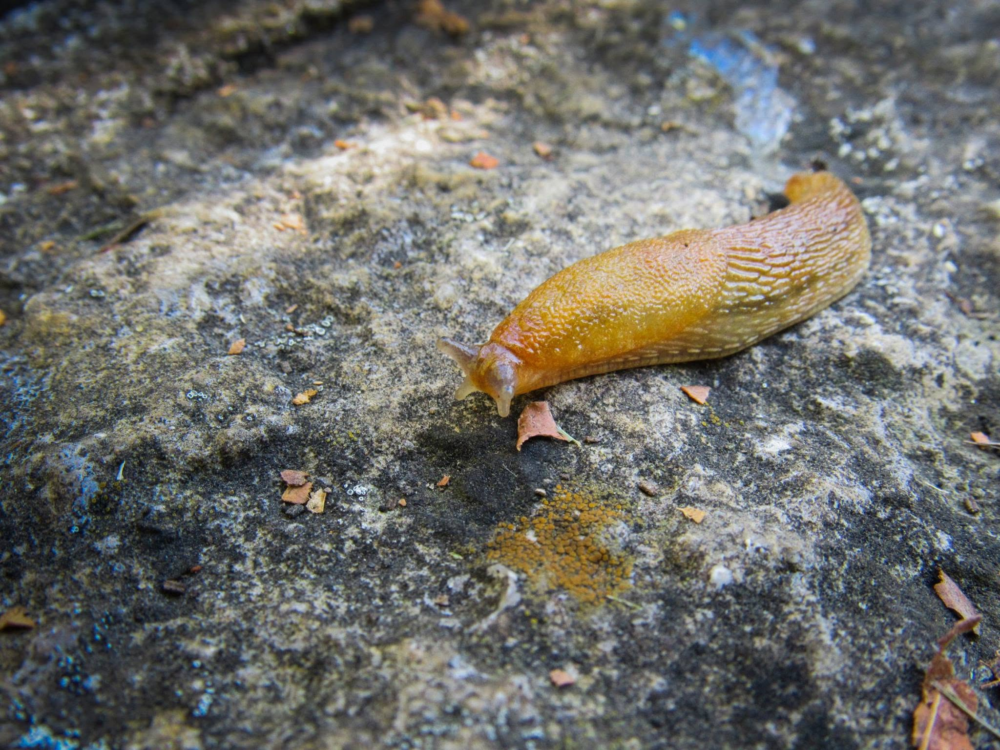
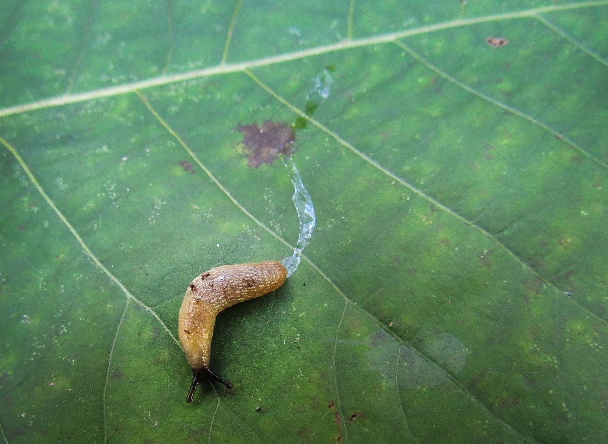
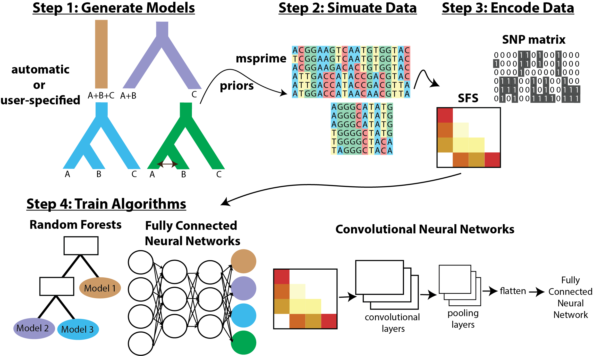
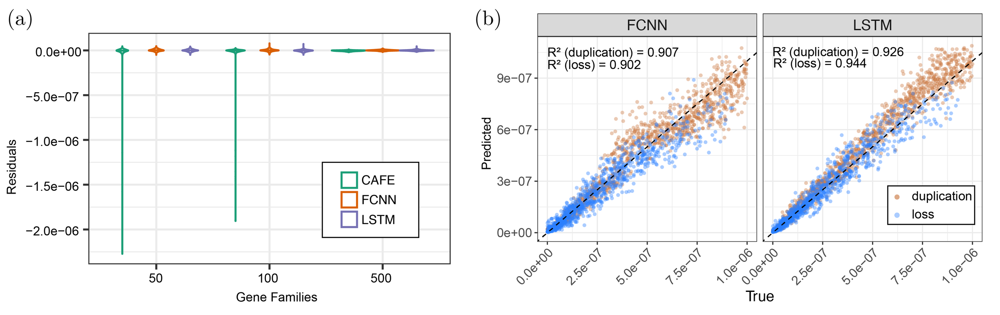
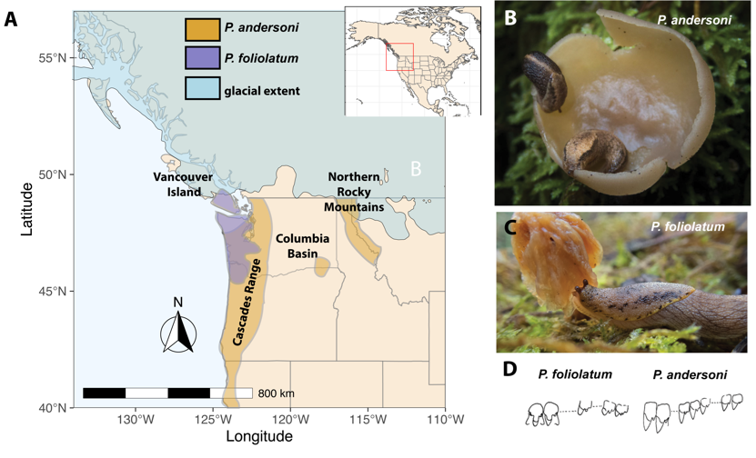
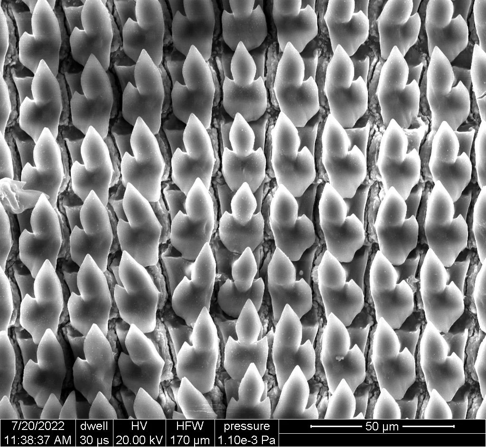

Research
We develop and apply computational and machine-learning methods for analyzing genomic data in an evolutionary context, with a focus on diversification in terrestrial snails and slugs.
Invasive Terrestrial Gastropods
Invasive terrestrial gastropods pose threats to agriculture, human health, and biodiversity, and there are ~70 introduced terrestrial gastropods in the contiguous US. Despite their prevalence, invasive gastropods remain critically understudied, with even basic information including which species are present and the number and sources of introductions remaining unknown. We are both gathering basic, critical info on these invasions and using them as models for studying the evolutionary and ecological causes and consequences of invasions. We are using genomic, phenotypic, and ecological data to study the invasion histories of Arion slugs, Deroceras slugs, and a snail that poses major threats to peanut crops (Bulimulus bonariensis). In Arion and Deroceras our preliminary results support multiple, independent invasions. In some species, species distribution models suggest that habitat filtering is an important determinant of invasive range, while in others, new habitats appear to have been colonized following their introduction to North America.


Machine Learning in Population Genetics
Machine learning approaches are increasingly being applied to answer interesting questions in population genetics and phylogenetics. The lab has developed a python package popai, which infers the evolutionary histories of populations from genomic data using several machine learning approaches. We are also interested in when model violations mislead popular approaches for inferring population histories, detecting selection, and more. For example, my recent work found that selection can mislead inferences of introgression (Smith & Hahn, 2024). We test popular methods using simulated data, use machine learning to identify problematic model violations, and use machine learning approaches (e.g., domain adaptation) to perform more accurate inference in the presence of complex and difficult-to-model biological processes (e.g., background selection or ghost introgression) (e.g., Cobb & Smith, 2025).

New methods for studying gene duplicates
My lab is interested both in using gene duplicates to improve phylogenetic inference and in understanding the evolutionary dynamics, causes, and consequences of gene duplication and loss. Previously, I investigated the potential benefits and risks of using paralogs (genes related through duplication events) for phylogenetic inference (Yan et al. 2021; Smith and Hahn 2021; Smith and Hahn 2022; Smith et al. 2022). This work highlighted the robustness of phylogenetic inference to the heterogeneity introduced by the inclusion of paralogs and suggests steps towards including more data in phylogenetic analyses. We are also developing a new method, dusti, that infers trees from large gene families directly from alignments—most existing methods use gene trees! More recently, we uncovered a case in which gene duplicates actually improve inference by ameliorating the impacts of long-branch attraction (Smith & Hahn, 2026). We are also developing new machine learning approaches to infer rates of gene duplication and loss, identify lineages and gene families with elevated rates, and investigate relationships between rates of gene duplication and loss, speciation, and phenotypic change.

Speciation in Native Slugs
My lab studies species limits and speciation in native terrestrial gastropods from North America. Taildropper slugs (genus Prophysaon) are endemic to the temperate rainforests of the Pacific Northwest. There are nine described species, and the group appears to have a complex history with the potential for geology, climate, and ecology to have driven diversification. Our research has supported a likely history of divergence in isolated refugia during glaciation, followed by expansion and gene flow between lineages upon secondary contact in several species (Smith & Carstens, 2020; Smith et al., 2024). Furthermore, we have found evidence of undescribed diversity in this group (Smith et al., 2026).
We are also studying species limits in manteslugs (Genus Philomycus) from the southeastern US. Preliminary results suggest that taxonomic revisions will be needed in this group, as morphology-based identifications often conflict with results from genetic data.

